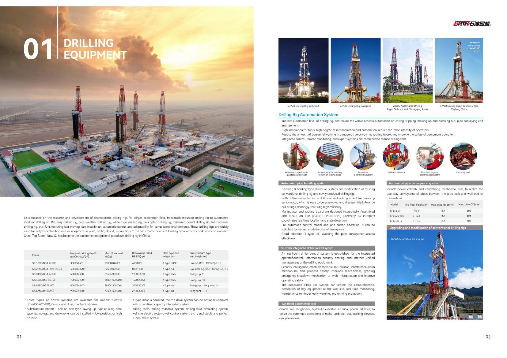
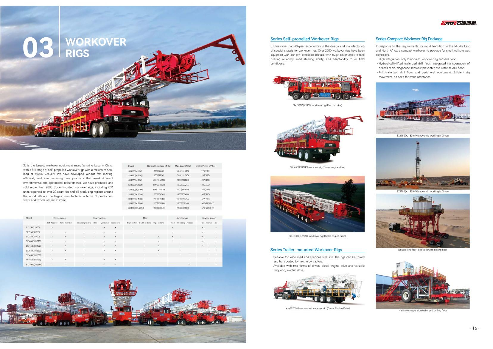
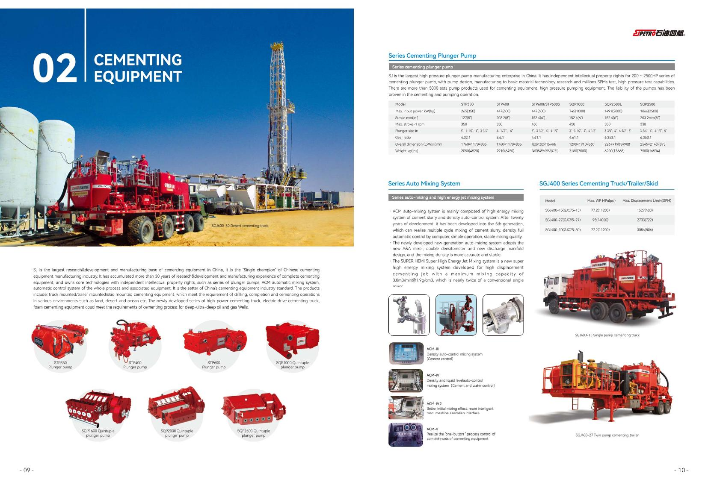
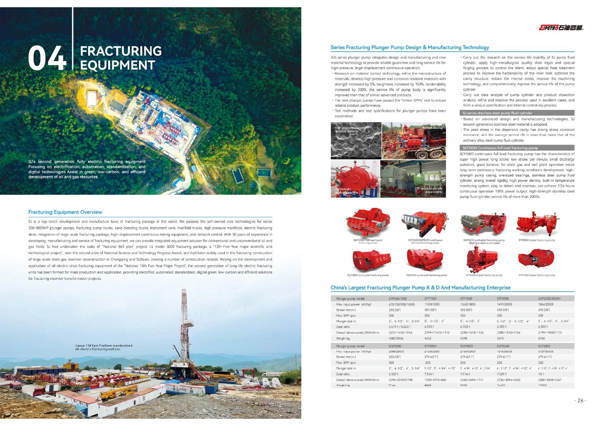

01
钻井装备 Drilling Equipment Series modularized drilling rigs ZJ30–ZJ90

系列模块钻机，钻深至 9000 m，三种动力可选（电驱 / 复合 / 机械），含钻机自动化系统与泥浆泵。 Series modularized drilling rigs, up to 9000 m, with three drive options (electric / compound / mechanical), including rig automation and mud pumps.
电驱 / 复合 / 机械驱动 Electric / compound / mechanical 钻机自动化系统 Rig automation 泥浆泵 Mud pumps STP1600 / SQP2800沙漠 / 低温 / 车装钻机 Desert / low-temp / truck-mounted
02
修井装备 Workover Equipment Self-propelled workover rigs XJ600–XJ2250

自走式修井机，钩载 600–2250 kN；全电动、超级电容、LNG、沙漠 / 山地 / 冷区等多型式。 Self-propelled workover rigs, 600–2250 kN; all-electric, supercapacitor, LNG, desert / mountain / cold-region variants.
全电动 All-electric XJ350超级电容 / LNG / 柴电双驱 Supercapacitor / LNG / dual-drive 沙漠 / 山地 / 冷区 Desert / mountain / cold-region
03
固井装备 Cementing Equipment Plunger pumps · ACM auto-mixing (5th gen)

柱塞泵 350–2500 hp，ACM 自动混浆（第 5 代）；固井车 / 撬 SGJ350–SGJ2500，含泡沫固井与连续配浆。 Plunger pumps 350–2500 hp, ACM auto-mixing (5th gen); cementing trucks / skids SGJ350–SGJ2500, incl. foam cementing and continuous mixing.
ACM 自动混浆（第 5 代） ACM auto-mixing (5th gen) 固井车 / 撬 Cementing trucks / skids SGJ350–SGJ2500泡沫固井 / 连续配浆 Foam cementing / continuous mixing
04
压裂装备 Fracturing Equipment Full-electric fracturing skids · 2500–8000 hp

全电动压裂撬 2500–8000 hp，工作压力 140 MPa；柱塞泵 350–8000 hp，配混砂车、压裂管汇与返排液处理。 Full-electric fracturing skids 2500–8000 hp, 140 MPa; plunger pumps 350–8000 hp, with blenders, manifolds and flowback treatment.
柱塞泵 Plunger pumps 350–8000 hp混砂车 Blenders SHS压裂管汇 Fracturing manifolds CO₂ / 干法压裂 / 返排液处理 CO₂ / dry frac / flowback
询盘 Inquiry
告诉我们型号或井场工况，我们协助选型。 Share your model or wellsite conditions — we'll help you select.
发送询盘 Send Inquiry